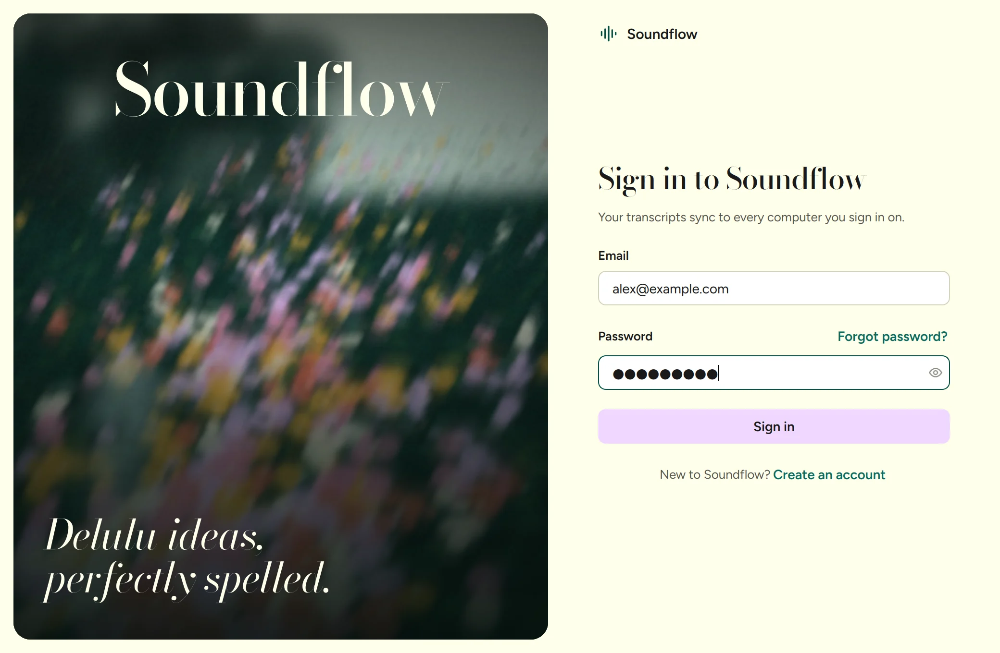
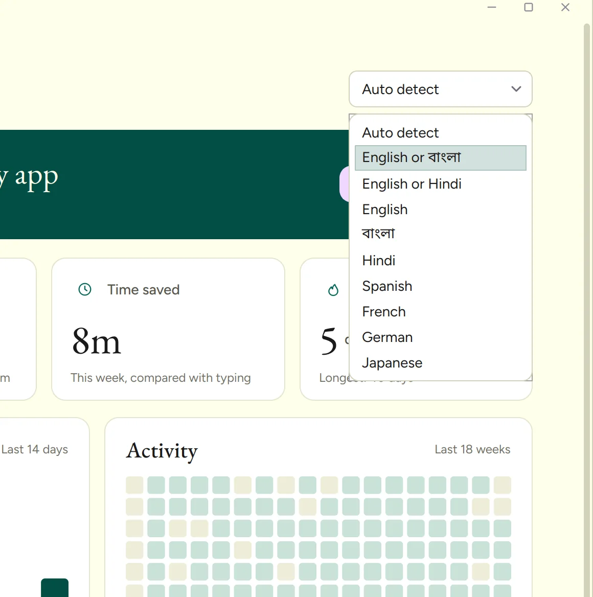

Types into any app
Talk, let go, and the text lands at your cursor.
Hold a shortcut, talk, let go. Your words appear in any app. Free and open source.

Talk, let go, and the text lands at your cursor.

Pick one, or let it detect which you speak.

Search, edit and copy anything you said.

Your voice is never uploaded.
For 64-bit Linux.
Save them in your Downloads folder.
Open a terminal and paste this.
$ cd ~/Downloads && chmod +x install.sh && ./install.shFind Soundflow in your app menu and sign in, or create an account.
Go to Preferences, then Dictation. Pick the keys for Hold to dictate (Ctrl+Alt+Space by default) and keep Use the shortcut in other apps on. On Wayland, allow it when your desktop asks.
Go to Preferences, then Speech model. Click Download on a model, then Use.
In any app, hold your shortcut, talk, and let go. The text appears at your cursor.
To remove it, download uninstall.sh and run chmod +x uninstall.sh && ./uninstall.sh.